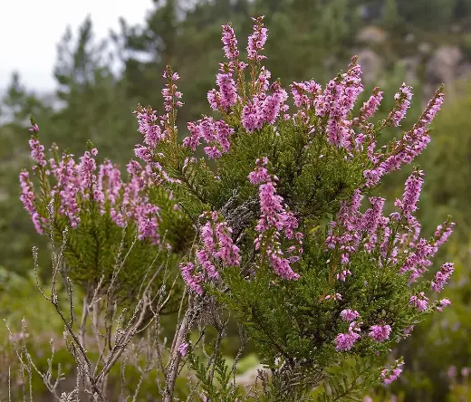

Edible flower or tea · Aug–Sep
Heather flowers
Calluna vulgaris
Also called Hedelyng
Heather flowers is a edible flower or tea you can forage from August to September in Jutland. Low woody shrub covering moors and heaths with tiny purple bell flowers in late summer.

When is heather flowers in season in Denmark?
Heather flowers is usually in season August to September. Timing shifts with weather, latitude and altitude.
Where does heather flowers grow in Denmark?
Heather flowers grows in Central Jutland (Midtjylland), North Jutland (Nordjylland), Southern Denmark (Syddanmark). Regions: Jutland.
How do you recognise heather flowers?
Low woody shrub covering moors and heaths with tiny purple bell flowers in late summer.
How do you harvest heather flowers?
Snip flowering tips in late summer.
How do you eat heather flowers?
Flowers as tea and in heather beer.
How do you store heather flowers?
Dry flowers.